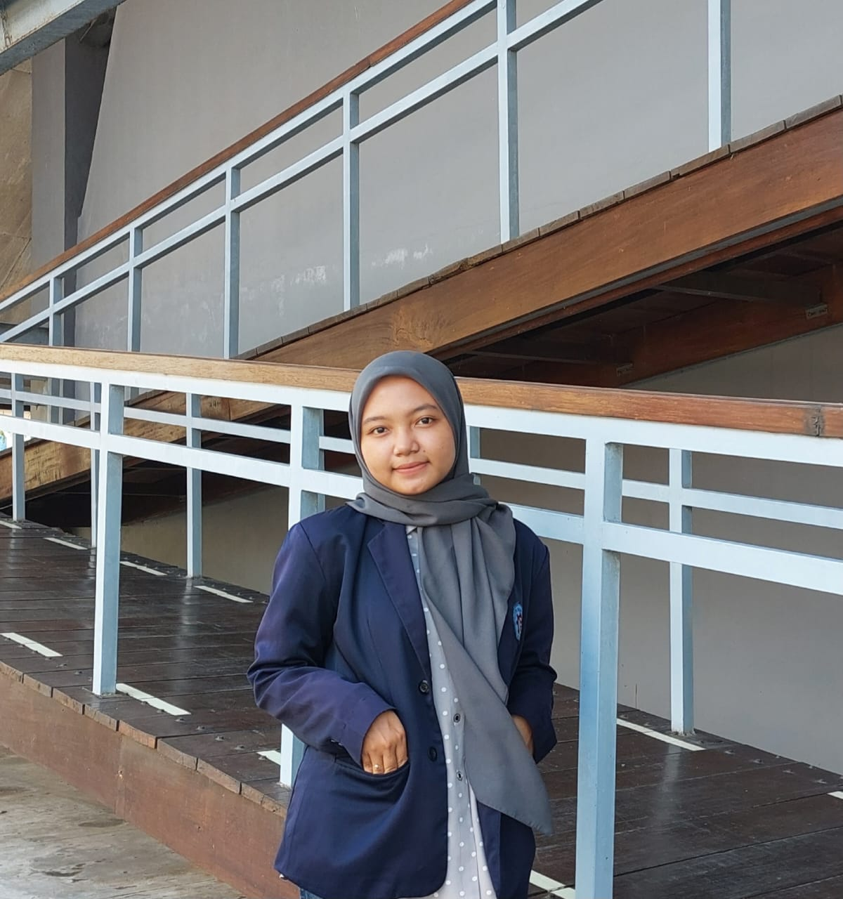

Halo, Semua saya
AJENG FUJI RAHAYU
Akrab dipanggil Ajeng, Saat ini saya sedang menempuh pendidikan D4 Teknologi Rekayasa Perangkat Lunak Di Politeknik Negeri Banyuwangi.

selama saya menempuh pedidikan di bangku kuliah ini saya tertarik dengan hal-hal berikut ini
Saya sangat tertarik pada bidang UI/UX, tertarik dengan kemampuan desain untuk memengaruhi pengalaman pengguna secara positif. Saya percaya bahwa antarmuka yang baik tidak hanya memperindah tampilan, tetapi juga meningkatkan fungsionalitas dan memudahkan interaksi pengguna. Saya selalu bersemangat untuk mempelajari tren terbaru dalam desain, serta memahami kebutuhan dan preferensi pengguna.
Selain itu saya juga sangat tertarik pada bidang pengembangan web, terutama pada bagian front end developer. dengan ketertarikan yang mendalam pada teknologi dan kreativitas yang terlibat dalam membangun aplikasi web yang inovatif. Saya menemukan kepuasan dalam menghadirkan solusi teknis yang elegan dan efisien untuk menyelesaikan tantangan kompleks dalam pembuatan situs web. Saya selalu bersemangat untuk belajar dan menguasai teknologi baru yang muncul. Saya percaya bahwa pengembangan web adalah perpaduan antara keahlian teknis dan visi artistik, dan saya berkomitmen untuk terus meningkatkan keterampilan saya dalam kedua aspek tersebut demi menciptakan pengalaman web yang luar biasa bagi pengguna.
Saya tertarik pada bidang manajemen proyek, dengan dedikasi yang kuat untuk memimpin dan mengelola tim dengan efisiensi demi mencapai tujuan bersama. Saya percaya bahwa manajemen proyek yang baik melibatkan pemahaman yang mendalam tentang ruang lingkup, waktu, dan anggaran, serta kemampuan untuk mengatasi tantangan yang muncul dengan solusi yang inovatif dan efektif. Dengan adanya komunikasi yang jelas, kepemimpinan yang kuat, dan pemikiran analitis yang tajam, saya berkomitmen untuk memberikan nilai tambah yang signifikan dalam setiap proyek yang saya kelola
Sebagai editor foto
Sebagai Front End Developer
Sebagai Project Manager pada project micro pembuatan prototype website penyewaan barang
Berikut ini merupakan skill yang saya pelajari selama saya duduk di bangku kuliah ini
Terkait dengan hal yang ingin disampaikan lebih lanjut bisa hubungi saya dibawah ini